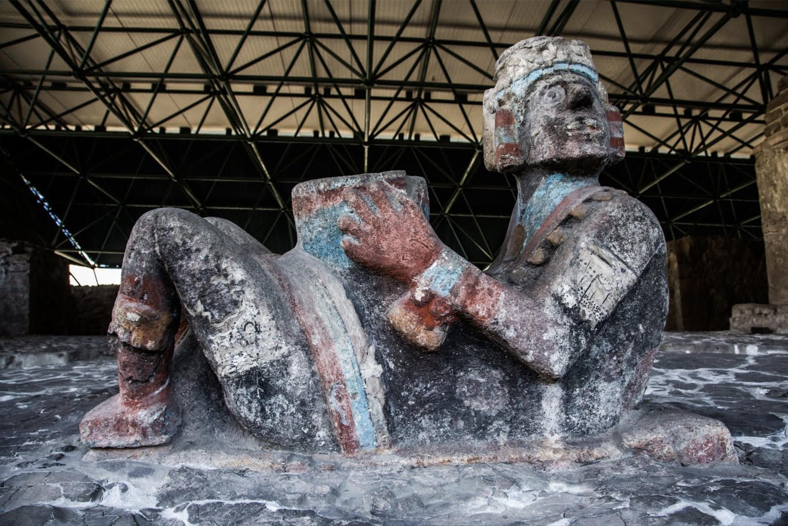

arrow_back
 search
search
search

A Chacmool figure holding a bowl in the ruins of Templo Mayor in Mexico City
Details
Sculpture representing a Chac Mool in its characteristic position, reclining in a pose difficult to keep, with bent arm and legs and the head completely turn to one side. He holds a cuauhxicalli, or offering vessel over his stomach. The rim of the vessel is ornamented with feather and jewel glyphs. The character is luxuriously attired with large circular earflaps, bracelets, and bangles made of green stone beads, and a three string necklace equally made of green stone beads from which a trapezoidal ornament that seems to represent an ancient object or a relic hangs.
3D Content
He wears sandals with heelpieces ornamented by little tecpatls (personified sacrificial knives) and a headdress of long feathers hanging down behind covering his back. The face of the character is covered by a variation of Tláloc’s rain mask in which his blinkers and long fangs can be identified. In the bottom of the sculpture there is an aquatic scene carved in bas-relief, where the figure of the god Tláloc is crouching in a Tlaltecuhtli, Lord of the Land, style. The god is surrounded by elements that suggest the aquatic and cold environment of the underworld. The sculpture was masterfully made in the so-called Aztec Imperial style. Sculptures of Chac Mool related to the worship to Tláloc, the rain god, have been found in Tenochtitlan, on the top of Templo Mayor.
Specifications

Credits
3D documentation was completed by CyArk in collaboration with INAH in 2016